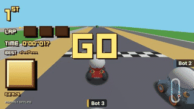

Sound effects, tuned by ear
Every sound here is synthesised in the page from the sliders beside it, the way assets/audio/build.py synthesises the shipped set, so a tweak plays at once. The engine is an F1-style rig with gears that are derived from speed alone, as the client would derive them. Beside each cue runs a clip of the action it marks. Pick a variant per cue and the picks panel at the foot collects every chosen parameter as JSON.
Engine
V10, six gears, Presentation onlyTwo detuned sawtooths, a square sub an octave down and a thread of intake noise, through a lowpass that opens with revs. Speed splits into gears whose bands widen geometrically, so the first shifts come fast and the top gear holds; past top speed a boost revs sixth into a limiter. Load is inferred from the change in speed: rising is on throttle, falling is overrun with crackle. Drive it with the keys or run the scripted lap, which uses the sim's own constants (30 m/s top, 2.5 s to top, 1.5 s to stop, 4 s coasting).

engine: clip not stagedCues
three takes each; A is today's sound where one ships; the starred pick is the proposalEach card is one cue the race fires, named as audio-cues.ts names it, with the change that fires it. Each comes with a proposed pick, chosen so the cue sits above the engine note (110 to 720 Hz) and so the countdown and GO share a family while the mini-turbo and the boost pad do not; Pick this on another variant overrides it. Loops run until stopped and scale with the speed slider. The waveform under the transport is the rendered buffer, exactly what would be written to the WAV.
Picks
paste this backThe picked variant of every cue with its parameters, the engine's parameters and the mix levels. Copy it into the issue or the chat and the port to build.py and audio.ts follows from it.